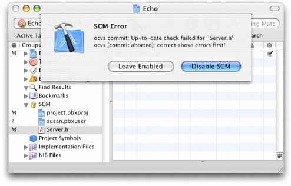
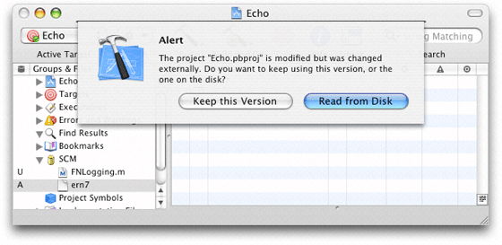

Legacy Document
Important: The information in this document is obsolete and should not be used for new development.
Managing Files
Version control allows you to maintain a history of a project’s development and lets you share projects with other developers. Xcode, in conjunction with your version control system, allow you to stay up to date with your team’s progress. Through the Xcode user interface, you can perform most of the version control tasks needed to work on a software project successfully.
This chapter introduces common version control tasks and explains how to accomplish them in Xcode. It also provides the recommended workflow you should follow when working on managed Xcode projects.
In this section:
Viewing File Status
Adding Files to the Repository
Updating Files
Removing Files From the Repository
Renaming Files
Viewing Revisions
Comparing Revisions
Committing Changes
Resolving Conflicts
Development Workflow
Viewing File Status
As you work on a project, the version control status of its files in relation to the repository change. Xcode tells you which files you have changed in your local copy of the project, which files need to be updated to the latest version in the repository, and so forth.
Xcode uses a one-letter code to represent the status of each file. Here’s what each code means:
Blank: The file is up to date with the latest version in the repository. You haven’t changed your local copy of it.
? Unknown: The file is not in the repository. See “Adding Files to the Repository.”
- Dash: The file is in a directory that’s not in the repository, or this is a directory that’s not in the repository. To add a directory to the repository, you must use your client tool. After that, add the files in the directory using Xcode. If you don’t use Xcode to add the files, Xcode will not add the files to the project file. In turn, when you commit your changes, Xcode will not notify other developers that files have been added to the project.
U Update: The latest version of the file in the repository is newer than your version. To check for conflicts between your version and the latest revision and then get the latest revision if there are no conflicts, select the file in the detail view and choose SCM > Update To > Latest.
C Conflict: Your changes may conflict with the changes in the latest version. To see conflicts, select the file in the detail view and choose SCM > Compare With > Latest.
M Modified: The next time you commit your changes to the file, either by selecting it and choosing SCM > Commit Changes or by choosing SCM > Commit Entire Project, the modified version of this file is added to the repository.
A To Be Added: The next time you commit your changes, this file is added to the repository.
R To Be Removed: The next time you commit your changes, this file is removed from the repository.
You can view the version control status of files in several places: The SCM Group, the detail view, and the SCM Results window.
The SCM group in the Groups & Files list in the project window shows the status of all the files that differ from the latest version in the repository or for which you’ve specified a version control operation to be performed later, such as adding a new file to the repository. Figure 22-1 shows the SCM group.
Xcode’s detail view lists all the files in a project. When using version control, you can add the SCM column to the detail view by selecting the project group in the Groups & Files list and choosing View > Detail View Columns > SCM. The SCM column shows the status of each file in the project. Figure 22-2 shows the SCM column in Xcode’s detail view.
The SCM Results window provides the same information the SCM group does, plus an editor and the SCM results pane. The window appears when you double-click the SCM group or when you choose SCM > SCM Results. The button on the bottom-right corner of the top pane toggles between the file list pane and the SCM results pane. Figure 22-3 shows the SCM Results window with the SCM results pane and the editor pane.
You can refresh the status of the files in your project anytime by choosing SCM > Refresh Entire Project.
Adding Files to the Repository
After you add a file to your local copy of a managed Xcode project, its status is ? (unknown). This means that the file is not part of the repository. If you want to add the file to the repository the next time you commit your changes, select the file in the project window or the SCM Results window and choose SCM > Add to Repository. The status of the file changes from ? to A. Figure 22-4 shows files in the SCM group to be added to the repository in the next commit.
When you commit file additions, you must commit the project
file (project.pbxproj)
as well, at the same time. This lets other developers know there’s
a new file in the project as soon as you commit the addition. If
you don’t commit the project file when you commit the file removal
(that is, you select a file with a status of A, choose SCM >
Commit Changes, and commit it without also selecting the project
file), other developers will not be able to get the added file into
their local copies of the project because Xcode wouldn’t know
that a file was added to the project.
Updating Files
When a file in your local copy of a project becomes outdated, Xcode assigns it a status of U. This means that another developer has submitted changes to that file to the repository and your working copy doesn’t include them. You can update your local copy of a file that needs updating one of two ways:
Select the file in the project window and choose SCM > Update To > Latest.
Choose SCM > Update Entire Project to update all files in the SCM group that have a status of U.
When the project file (project.pbxproj)
has a status of U, you need to update the project file and reopen
the project in Xcode. Figure 22-5 shows the SCM
group of an Xcode project whose project file needs to be updated.
To update the project file, select project.pbxproj in
the SCM group and choose SCM > Update To > Latest. Alternatively,
you can choose SCM > Update Entire Project. After the update operation
is completed, close the project and reopen it.
If you updated only the project file, when you reopen the project, the SCM group may display files with a status of U using red text. These files were added to the project after your last update. To get the new files into your working copy, select them in the project window and chose SCM > Update To > Latest. After the update operation is complete, choose SCM > Refresh Entire Project to refresh the status of the files in your working copy.
Removing Files From the Repository
To remove a file from your local copy of a project and from the repository when you commit the operation, remove the file as you normally would; that is, select the file in the project window and choose Edit > Delete or press Command-Delete. The Delete References dialog, shown in Figure 22-6, appears.
To remove the file from your local copy of the project, click Delete References & Files. The Remove From SCM Repository dialog appears, shown in Figure 22-7.
To tell Xcode you want the file removed from the repository, click Remove. The file’s status changes to R and the filename appears in gray, as shown in Figure 22-8.
When you commit the file-removal operation, you must commit
the project file (project.pbxproj),
at the same time. Other developers can then keep their project files
in sync with the project directory by updating their local copies.
If you don’t commit the project file when you commit the file-removal
operation (for example, you select a file with a status of R, choose
SCM > Commit Changes, and commit it without also selecting the project
file), Xcode notifies other developers that the file you removed
needs to be updated. When they update their local copy with the
repository, the file is removed from their local copy, but their
copy of the project file still references the nonpresent file, and
the file appears in red in the detail view. This may confuse developers,
who will then have to find out why a file that’s supposed to be
in their project directories is missing.
Renaming Files
Renaming a file produces two version control operations: the removal of the file under the old name and the addition of the file with the new name. Therefore, Xcode shows the R status next to the old name and the A status next to the new name.
Warning: When you rename a managed file, the change information for the file under the old name is unavailable under the new name.
To rename a file, select the file in the project window and choose File > Rename. The Rename dialog appears, as shown in Figure 22-9.
To proceed with the rename, click Rename. The SCM group in the Groups & Files list, as well as the detail view, show that the file under the old name will be removed and the file with the new name will be added, as shown in Figure 22-10.
Viewing Revisions
The SCM pane in the inspector or a file’s Info window contains a list of each revision of the file. The information displayed in the list includes the revision number, the author, and a message about the changes made. The change message may be truncated in the list. To see the entire change message for a revision, select the revision in the revision list. The change message, as well as the other properties of the list, appears in the text field below the revision list. Figure 22-11 shows the revision of a file in an Info window.
You can compare any two versions of a file by selecting them in the list and clicking the Compare or Diff buttons, as appropriate. To update your copy of the file to a specific revision, select the revision and click Update.
Comparing Revisions
With Xcode you can compare different versions of a file in a project. This way, you can see changes made to a file from version to version. For example, you can compare your locally modified version of a file with the latest revision submitted by another member of your team. Or you can compare the two most recent revisions in the repository to see what has changed.
To compare your version of a file or project with a version in the repository, use the Compare With and Diff With commands in the SCM menu. You can also select any two revisions of a file in its Info window and compare them using the Compare and Diff buttons.
Xcode gives you a choice of tools to use when comparing files. The Compare With command lets you compare files using a visual tool, such as FileMerge. Alternatively, you can have Xcode perform the comparison using the differencing facility of your client.
The Compare Command
The Compare With command allows you to compare files using a visual tool. Figure 22-12 shows the result of comparing two revisions of a file.
To compare your version of a file with a revision in the repository:
Select the file in the project window.
Choose SCM > Compare With and select the revision to compare against:
Latest. Choose this option to compare a file with the latest version in the repository.
Base. Choose this option to compare a file with the version you checked out of the repository.
Revision. Choose this option to get the revision list for the selected file. This option is useful if you’re not sure of the revision you want to compare against.
Specific Revision. When you know the revision you want to compare against, choose this option and enter the revision number in the dialog that appears.
File. Choose this option to compare a file in your project with any file on disk. Choose the other file from the dialog that appears.
You can also compare any two revisions of a file in its Info window by doing the following:
Select the file, open its Info window, and click SCM.
Select the revisions you want to compare in the revision list and click Compare.
The Diff Command
Another way to compare revisions using Xcode is to identify
the differences between them by using the differencing facility
of your client tool. Xcode displays the output of the diff command
in a separate editor window. Figure 22-13 shows an example
of comparing two revisions of a file using svn
diff.
You can specify the format used in the comparison in the Differencing section in the SCM pane in the Xcode Preferences window. See “Specifying Comparison and Differencing Options” for details.
To identify the differences between your copy of a file with a revision in the repository, select the file in the project window, choose SCM > Diff With, and choose a version to compare against. The options you can choose from are:
Latest. Choose this option to compare a file with the latest revision in the repository.
Base. Choose this option to compare a file with the revision you checked out of the repository.
Revision. Choose this option to get the revision list for the selected file. This option is useful if you’re not sure which revision you want to compare against.
Specific Revision. When you know the revision you want to compare against, choose this option and enter the revision number in the dialog that appears.
You can also identify the differences between any two revisions of a file in its Info window by doing the following:
Select the file, open its Info window, and click SCM.
Select the revisions you want to compare from the revision list and click Diff.
Specifying Comparison and Differencing Options
Xcode stores personal settings such as comparison and differencing
preferences, whether Xcode saves open files before performing version
control operations, and so forth, in your user file (<username>.pbxuser)
in the project package (<project_name>.xcode).
You specify those settings in the SCM pane in the Xcode Preferences
window, shown in Figure 22-14. (See “Project Packages” for more
information on project packages.)
The Comparison Handling section of the SCM preferences pane allows you to specify how comparisons are performed:
The “View comparisons using” pop-up menu lets you choose the tool you want Xcode to invoke when you execute the Compare command. You can choose between FileMerge, BBEdit, or Other to specify an application of your choosing.
The “Display local files on the” pop-up menu specifies whether local files are displayed on the left or the right in FileMerge comparison windows.
The Operations section specifies whether Xcode saves files before performing version control operations through the “Save files before SCM operations” option.
The Differencing section lets you specify how you want the differencing performed:
The Format pop-up menu specifies the output format used to display the results of the comparison. The possible formats are:
Default. This is the default output format used by your client’s
diffcommand.Contextual. The output uses the context format, displaying differences between the two revisions with the number of lines of context specified in the Lines text field.
Side by Side. The output is a side-by-side comparison of the files.
Unified. Uses the unified format, which is similar to the context format but omits redundant lines of context.
Ignore blank lines. Ignore changes that insert or remove blank lines.
Ignore whitespace. Ignore whitespace when comparing lines.
Committing Changes
When you’re done making changes to a file and you want to submit your modifications to the repository, you can tell Xcode to commit the file in one of two ways:
Select the file in the project window and choose SCM > Commit Changes.
Choose SCM > Commit Entire Project. This commits changes in every file listed in the SCM group with the status A, M, or R.
Both actions bring up a dialog with a text field in which you enter a message describing your changes. To execute the command, click Commit.
If your client tool encounters a problem during the commit process (for example, a file to be processed is outdated), Xcode displays a dialog showing your client’s error message, as shown in Figure 22-15.
Figure 22-15 Dialog indicating that changes cannot be committed because there are files that need to be updated
You must correct the problem by, for example, updating any files with a status of U, before you can commit your changes.
Resolving Conflicts
A file with a status of C contains changes that clash with the latest revision in the repository. For example, you may have removed a method from a class definition that another developer published changes to before you had a chance to commit your own changes. To view how your version of a file in conflict differs from the latest revision, use the Compare or Diff commands. See “Comparing Revisions” for details.
Version control systems cannot resolve conflicts. They can only make you aware of the presence of conflicts. In some cases, you may be able to resolve the conflict yourself. However, in the majority of cases (if you work in a team), you need to communicate with the person who published the changes that conflict with your own before determining the best way to resolve the conflict.
There are two ways of resolving a conflict between your version of a file and the latest revision in the repository:
Merge the changes published to the repository with your local changes and edit the resulting file as necessary:
In the project window, select the file with the conflict.
Choose SCM > Update To > Latest.
Edit the file to resolve the conflicts.
Save the file. If you’re using Subversion, you must also choose SCM > Resolved.
Discard your copy of the file in favor of the latest revision in the repository:
Select the file in the project window and choose SCM > Discard Changes.
Conflicts in the project file (project.pbxproj)
result from developers adding, removing, or renaming files from
their local copies and committing those files without committing
the project file at the same time. You cannot resolve conflicts
in the project file. If your copy of the project file gets a status
of C, choose SCM > Update Entire Project or select the project file
in the project window and choose SCM > Update To > Latest.
You may get a dialog like the one in Figure 22-16.
Click Discard My Changes to discard your modifications to the project file and use the latest version in the repository. If the dialog in Figure 22-17 appears, click Read From Disk to force Xcode to re-read the project file from disk (which is the latest version in the repository).
Figure 22-17 Dialog indicating that the project file has been changed by an application other than Xcode
If Xcode is unable to open your project due to a corrupted project file, you must use your client tool to update the project file to the latest version in the repository. See “Updating a Local Project File to the Latest Version in a CVS Repository” and “Updating the Project File to the Latest Version in a Subversion Repository” for more information.
Development Workflow
When working on a managed project, you have two major objectives: To maintain you local copy of the project up to date with the latest version in the repository and to keep the repository up to date with your changes. If you update your working copy regularly, you reduce the probability that the changes you make conflict with the changes other members of your team have published to the repository.
This section describes the workflow you should follow when working on a managed project with Xcode that allows you to keep your local copy of it up to date with the latest published changes and to submit your changes to the repository as appropriate to keep your teammates abreast of your work.
When working on a managed project, you should perform the following tasks on a regular basis—hourly, daily, weekly, or as convenient—depending on your team’s needs and requirements:
Update your local copy with the latest version in the repository.
Make changes to your local copy of the project.
Resolve conflicts.
Publish your changes.
Update Your Local Copy
Before you start making changes to a project, you should make sure your local copy contains the latest changes your peers have published.
To determine whether your project is up to date, choose Refresh Entire Project from Xcode’s SCM menu. You need to update any files that have a status of U. Files with a status of C are in conflict. You should examine the files in conflict before deciding whether to update them. See “Updating Files” and “Resolving Conflicts” for details.
Make Changes
To modify files all you need to do is edit them. (If you’re using a version control system that locks files in your local copy, you need to choose SCM > Edit before you can save your changes to disk.)
Making structural changes to a project, such as adding or
removing files, creating or removing groups in the Groups &
Files list, and configuring build settings produce changes in the
project file (project.pbxproj).
You must commit the project file after making structural changes
to a project, along with the files you operated on.
In general, you should make structural changes to a project only after updating it from the repository. You should then commit those operations immediately, along with the project file, before making additional modifications. Then inform the rest of your team so that they update their project files to the new version. This procedure helps reduce conflicts between your teammates’ copies of the project file and the latest version in the repository, as well as keep the contents of their local project directories and their corresponding project files in sync. See “Project Packages,” “Updating Files,” and “Committing Changes” for details.
Resolve Conflicts
Before you commit your changes to the repository, refresh the status of the project to determine whether conflicts exist. In Xcode, choose SCM > Refresh Entire Project. If the SCM group in the Groups & Files list doesn’t contain files with a status of C, you can commit your changes. Otherwise, you must resolve the conflicts. See “Resolving Conflicts” for details.
Publish Your Changes
After you’ve confirmed that your local modifications don’t conflict with published changes, you may commit them to the repository. See “Committing Changes” for more information.
© 2004, 2006 Apple Computer, Inc. All Rights Reserved. (Last updated: 2006-11-07)